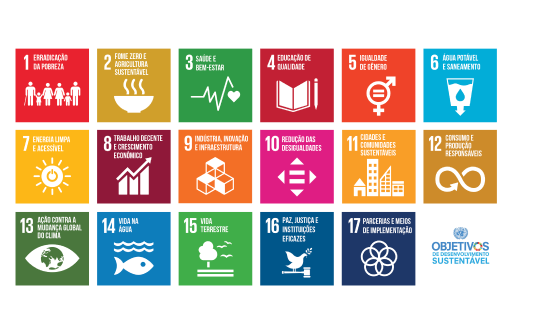

4
DS

O QUE É ODS
Os Objetivos de Desenvolvimento Sustentável (ODS) são uma agenda mundial adotada durante a Cúpula das Nações Unidas sobre o Desenvolvimento Sustentável em setembro de 2015 composta por 17 objetivos e 169 metas a serem atingidos até 2030. São uma chamada universal para acabar com a pobreza, proteger o planeta e garantir que todas as pessoas desfrutem de paz e prosperidade.
Os Objetivos de Desenvolvimento Sustentável (ODS) são uma agenda mundial adotada durante a Cúpula das Nações Unidas sobre o Desenvolvimento Sustentável em setembro de 2015 composta por 17 objetivos e 169 metas a serem atingidos até 2030. São uma chamada universal para acabar com a pobreza, proteger o planeta e garantir que todas as pessoas desfrutem de paz e prosperidade.

ODS NO BRASIL
Os Objetivos de Desenvolvimento Sustentável são um apelo global à ação para acabar com a pobreza, proteger o meio ambiente e o clima e garantir que as pessoas, em todos os lugares, possam desfrutar de paz e de prosperidade. Estes são os objetivos para os quais as Nações Unidas estão contribuindo a fim de que possamos atingir a Agenda 2030 no Brasil.
Os Objetivos de Desenvolvimento Sustentável são um apelo global à ação para acabar com a pobreza, proteger o meio ambiente e o clima e garantir que as pessoas, em todos os lugares, possam desfrutar de paz e de prosperidade. Estes são os objetivos para os quais as Nações Unidas estão contribuindo a fim de que possamos atingir a Agenda 2030 no Brasil.
ODS 4. EDUCAÇÃO DE QUALIDADE
Assegurar a educação inclusiva e equitativa e de qualidade, e promover oportunidades de aprendizagem ao longo da vida para todos.
O progresso da educação de qualidade tem sido difícil em algumas regiões em desenvolvimento devido a altos níveis de pobreza, conflitos armados e outras gravidades. Na Ásia Ocidental e no Norte da África, o conflito armado em curso tem aumentado o número de crianças fora da escola. Esta é uma tendência preocupante. Enquanto a África subsaariana teve um grande progresso na matrícula do ensino primário em todas as regiões em desenvolvimento (de 52% em 1990, até 78% em 2012) ainda existem grandes disparidades.
Crianças dos lares mais pobres têm quatro vezes mais probabilidades de estarem fora da escola do que as crianças dos lares mais ricos. As disparidades entre áreas rurais e urbanas também permanecem altas.
Alcançar uma educação inclusiva e de qualidade para todos reafirma a crença de que a educação é um dos veículos mais poderosos para o desenvolvimento sustentável. Este objetivo busca garantir que todas as crianças completem a educação primária e secundária gratuita até em 2030. Também pretende proporcionar acesso a formação profissional de custo razoável, para eliminar disparidades de gênero e riqueza, e alcançar o acesso universal a um ensino superior de qualidade.
Assegurar a educação inclusiva e equitativa e de qualidade, e promover oportunidades de aprendizagem ao longo da vida para todos.
O progresso da educação de qualidade tem sido difícil em algumas regiões em desenvolvimento devido a altos níveis de pobreza, conflitos armados e outras gravidades. Na Ásia Ocidental e no Norte da África, o conflito armado em curso tem aumentado o número de crianças fora da escola. Esta é uma tendência preocupante. Enquanto a África subsaariana teve um grande progresso na matrícula do ensino primário em todas as regiões em desenvolvimento (de 52% em 1990, até 78% em 2012) ainda existem grandes disparidades.
Crianças dos lares mais pobres têm quatro vezes mais probabilidades de estarem fora da escola do que as crianças dos lares mais ricos. As disparidades entre áreas rurais e urbanas também permanecem altas.
Alcançar uma educação inclusiva e de qualidade para todos reafirma a crença de que a educação é um dos veículos mais poderosos para o desenvolvimento sustentável. Este objetivo busca garantir que todas as crianças completem a educação primária e secundária gratuita até em 2030. Também pretende proporcionar acesso a formação profissional de custo razoável, para eliminar disparidades de gênero e riqueza, e alcançar o acesso universal a um ensino superior de qualidade.
OBJETIVOS DA ODS 4 ATÉ 2030
4.1 Até 2030, garantir que todas as meninas e meninos completem o ensino primário e secundário livre, equitativo e de qualidade, que conduza a resultados de aprendizagem relevantes e eficazes
4.2 Até 2030, garantir que todos as meninas e meninos tenham acesso a um desenvolvimento de qualidade na primeira infância, cuidados e educação pré-escolar, de modo que eles estejam prontos para o ensino primário
4.3 Até 2030, assegurar a igualdade de acesso para todos os homens e mulheres à educação técnica, profissional e superior de qualidade, a preços acessíveis, incluindo universidade
4.4 Até 2030, aumentar substancialmente o número de jovens e adultos que tenham habilidades relevantes, inclusive competências técnicas e profissionais, para emprego, trabalho decente e empreendedorismo
4.5 Até 2030, eliminar as disparidades de gênero na educação e garantir a igualdade de acesso a todos os níveis de educação e formação profissional para os mais vulneráveis, incluindo as pessoas com deficiência, povos indígenas e as crianças em situação de vulnerabilidade
4.6 Até 2030, garantir que todos os jovens e uma substancial proporção dos adultos, homens e mulheres estejam alfabetizados e tenham adquirido o conhecimento básico de matemática
4.7 Até 2030, garantir que todos os alunos adquiram conhecimentos e habilidades necessárias para promover o desenvolvimento sustentável, inclusive, entre outros, por meio da educação para o desenvolvimento sustentável e estilos de vida sustentáveis, direitos humanos, igualdade de gênero, promoção de uma cultura de paz e não violência, cidadania global e valorização da diversidade cultural e da contribuição da cultura para o desenvolvimento sustentável
4.a Construir e melhorar instalações físicas para educação, apropriadas para crianças e sensíveis às deficiências e ao gênero, e que proporcionem ambientes de aprendizagem seguros e não violentos, inclusivos e eficazes para todos
4.b Até 2020, substancialmente ampliar globalmente o número de bolsas de estudo para os países em desenvolvimento, em particular os países menos desenvolvidos, pequenos Estados insulares em desenvolvimento e os países africanos, para o ensino superior, incluindo programas de formação profissional, de tecnologia da informação e da comunicação, técnicos, de engenharia e programas científicos em países desenvolvidos e outros países em desenvolvimento
4.c Até 2030, substancialmente aumentar o contingente de professores qualificados, inclusive por meio da cooperação internacional para a formação de professores, nos países em desenvolvimento, especialmente os países menos desenvolvidos e pequenos Estados insulares em desenvolvimento.
4.2 Até 2030, garantir que todos as meninas e meninos tenham acesso a um desenvolvimento de qualidade na primeira infância, cuidados e educação pré-escolar, de modo que eles estejam prontos para o ensino primário
4.3 Até 2030, assegurar a igualdade de acesso para todos os homens e mulheres à educação técnica, profissional e superior de qualidade, a preços acessíveis, incluindo universidade
4.4 Até 2030, aumentar substancialmente o número de jovens e adultos que tenham habilidades relevantes, inclusive competências técnicas e profissionais, para emprego, trabalho decente e empreendedorismo
4.5 Até 2030, eliminar as disparidades de gênero na educação e garantir a igualdade de acesso a todos os níveis de educação e formação profissional para os mais vulneráveis, incluindo as pessoas com deficiência, povos indígenas e as crianças em situação de vulnerabilidade
4.6 Até 2030, garantir que todos os jovens e uma substancial proporção dos adultos, homens e mulheres estejam alfabetizados e tenham adquirido o conhecimento básico de matemática
4.7 Até 2030, garantir que todos os alunos adquiram conhecimentos e habilidades necessárias para promover o desenvolvimento sustentável, inclusive, entre outros, por meio da educação para o desenvolvimento sustentável e estilos de vida sustentáveis, direitos humanos, igualdade de gênero, promoção de uma cultura de paz e não violência, cidadania global e valorização da diversidade cultural e da contribuição da cultura para o desenvolvimento sustentável
4.a Construir e melhorar instalações físicas para educação, apropriadas para crianças e sensíveis às deficiências e ao gênero, e que proporcionem ambientes de aprendizagem seguros e não violentos, inclusivos e eficazes para todos
4.b Até 2020, substancialmente ampliar globalmente o número de bolsas de estudo para os países em desenvolvimento, em particular os países menos desenvolvidos, pequenos Estados insulares em desenvolvimento e os países africanos, para o ensino superior, incluindo programas de formação profissional, de tecnologia da informação e da comunicação, técnicos, de engenharia e programas científicos em países desenvolvidos e outros países em desenvolvimento
4.c Até 2030, substancialmente aumentar o contingente de professores qualificados, inclusive por meio da cooperação internacional para a formação de professores, nos países em desenvolvimento, especialmente os países menos desenvolvidos e pequenos Estados insulares em desenvolvimento.
SAIBA MAIS
Nas redes sociais da ONU
Nas redes sociais da ONU